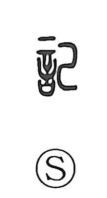

記

Uncategorized
Kun: shirusu | On: ki
to record ・ to write down ・ document ・ account ・ to remember
Explanation
A phono-semantic compound: the left side 言 gives the realm of words, while the right side 己 supplies the on reading ki. Shirakawa links it to the cognate 紀, where 糸 with 己 originally pictured thread neatly wound onto a spool—putting threads in order. When that idea is transferred from silk to speech, 記 comes to mean arranging words in good order and setting them down: to write, to note, to record. From there it also denotes what has been written—a document or account—and even the act of remembering. Because of this shared core of “ordering and setting down,” 記 and 紀 often interchange in compounds such as kisai, kijutsu, and kiroku.